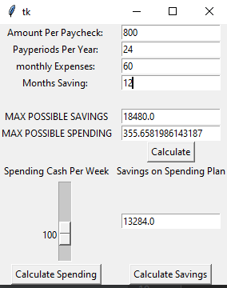
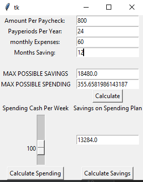

This project was programmed in Python. While it would have been easy to achieve a similar project using Excel, building a foundation in Python will allow
me more freedom with other features I may want to add in later down the line. I originally built this program without use of other libraries but ultimately
decided to learn tkinter so that you can dynamically alter the amounts and experiment with new plan and savings amounts until you find what you are happy
with.
The program uses 3 functions, each tied to a button from the tkinter library. Generate() is responsible for taking in the initial inputs and calculating the maximum possible spending and savings for the program.
It's also responsible for giving a physical location to sliders and buttons for the 2nd part of the program. The last 2 functions allow you to make either a spending plan based on the savings you would like,
or to generate savings based on a spending plan you are comfortable with.
import tkinter as tk
# --- functions ---
def calcplan():
#^^ 2nd button function
try:
savingsPossible.set(float(maximumPossible.get()) - (float(planSlider.get()) * 4.33 * float(monthsSaving.get())))
#^^ Calculates a weekly spending plan based on value in slider and previously supplied information
except Exception as ex:
print(ex)
savingsPossible.set('error')
def calcSpending():
try:
planSlider.set((float(maximumPossible.get())-float(savingsPossible.get()))/(float(monthsSaving.get())*4.33))
except Exception as ex:
print(ex)
def generate():
#^^First button function
try:
result = (float(payPeriods.get()) / 12 * float(monthsSaving.get()) * float(amountPaid.get())) - \
(float(monthlyExpenses.get()) * float(monthsSaving.get()))
spending = float(result) / (float(monthsSaving.get()) * 4.33)
maximumPossible.set(result)
maxSpending.set(spending)
#^^Calculations for what you can save if you spend nothing and what you can spend in a week if you spend every penny
planSlider.configure(from_=float(maxSpending.get()))
planButton.grid(row=12, column=1)
planSlider.grid(row=9, column=0)
button.grid(row=7, column=1)
spendingCashLabel.grid(row=8, column=0)
amountSavedLabel.grid(row=8, column=1)
savingsPossibleEntry.grid(row=9, column=1)
spendingButton.grid(row=12, column=0)
#^^This makes it so that the 2nd part of the program will appear. Currently the variables are declared below but don't have a place on the matrix. After hitting the first button they will appear
except Exception as ex:
print(ex)
result = 'error'
# --- main ---
root = tk.Tk()
#^^ declaration of the main window
amountPaid = tk.StringVar()
payPeriods = tk.StringVar()
monthlyExpenses = tk.StringVar()
monthsSaving = tk.StringVar()
maximumPossible = tk.StringVar()
maxSpending = tk.StringVar()
#^^ String variables used for the entry fields
tk.Label(root, text="Amount Per Paycheck: ").grid(row=0, column=0)
tk.Label(root, text="Payperiods Per Year: ").grid(row=1, column=0)
tk.Label(root, text="monthly Expenses: ").grid(row=2, column=0)
tk.Label(root, text="Months Saving: ").grid(row=3, column=0)
tk.Label(root, text=" ").grid(row=4, column=0)
tk.Label(root, text="MAX POSSIBLE SAVINGS").grid(row=5, column=0)
tk.Label(root, text="MAX POSSIBLE SPENDING").grid(row=6, column=0)
#^^Labels for part 1 of program
tk.Entry(root, textvariable=amountPaid).grid(row=0, column=1)
tk.Entry(root, textvariable=payPeriods).grid(row=1, column=1)
tk.Entry(root, textvariable=monthlyExpenses).grid(row=2, column=1)
tk.Entry(root, textvariable=monthsSaving).grid(row=3, column=1)
tk.Label(root, text=" ").grid(row=4, column=1)
tk.Entry(root, textvariable=maximumPossible).grid(row=5, column=1)
tk.Entry(root, textvariable=maxSpending).grid(row=6, column=1)
#^^Entry windows for part 1 of program
button = tk.Button(root, text="Calculate", command=generate)
button.grid(row=7, column=1)
#^^First button for after initial inputs
planSlider = tk.Scale(root, from_=0, to=0)
#^^slider for part 2
spendingCashLabel = tk.Label(root, text="Spending Cash Per Week")
amountSavedLabel = tk.Label(root, text="Savings on Spending Plan")
savingsPossible = tk.StringVar()
savingsPossibleEntry = tk.Entry(root, textvariable=savingsPossible)
#^^Output for spending plan
planButton = tk.Button(root, text='Calculate Savings',command=calcplan)
#^^PlanButton.grid(row=12, column=1)
spendingButton = tk.Button(root, text='Calculate Spending', command=calcSpending)
root.mainloop()
 
